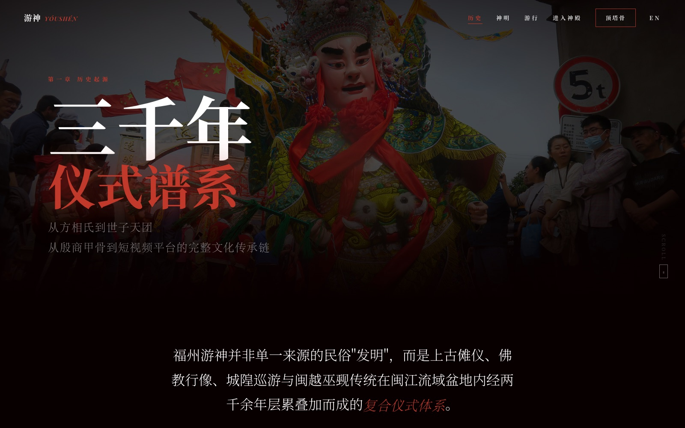
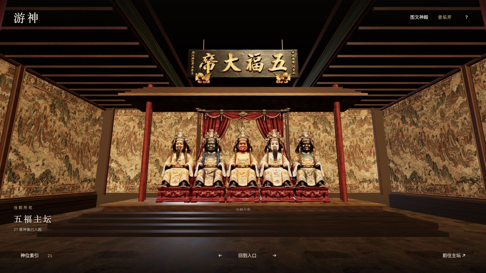

Loading model…
Prince Zhao赵世子
Drag to rotate




2026
Yóushén is a folk ritual from Fuzhou. During the Lunar New Year, handcrafted tāgǔ deity figures are carried out from temples and move through local community territories. The procession carries local belief, craft knowledge, ritual order, and community memory. In 2024, yóushén became widely visible through short videos, but much of its cultural logic remained hard to access.
This project collects scattered historical and cultural materials into a digital archive, then extends the archive into an exhibition experience. Visitors first browse the archive through a screen interface. They can then activate a large tāgǔ projection and step into the interaction area, where the projected figure responds to their body movement.

